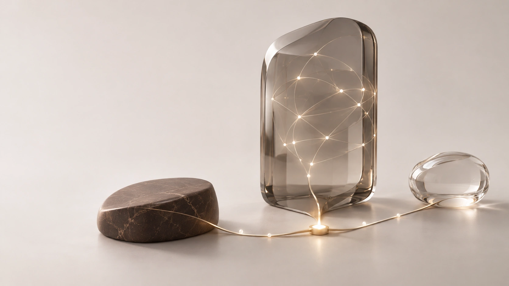

Diagnosis before prescription
We examine how work moves through the business, how staff use existing systems and where time or revenue is being lost. The findings determine which change is worth testing.
How we workAbout Mirèl Partners
Irem DeloraFounder, Mirèl Partners
AI Intelligence & Orchestration
for Aesthetics, Wellness & Longevity.
We help established U.S. med spas understand where revenue, staff time and capacity are lost, then design connected workflows with clear ownership and measurable outcomes.
Your first conversation
A 30-minute review with the founder, focused on one recurring issue in your practice and what to examine next.
Human-led strategy. AI-orchestrated operations. Defined around the way your practice works.
Explore our capabilitiesFrom the founder
Understand the business.
Choose the change that matters.
Irem Delora · Founder, Mirèl Partners
My work in marketing strategy and digital execution made me look more closely at what happens after someone asks about a service. Who replies? Who owns the next step? Can the team see which changes are worth the effort?
I founded Mirèl Partners around those questions. An established practice can have demand and still lose opportunities between reception, booking, consultation and follow-up. Understanding that operating picture is where our work begins.
I see AI as part of a business system: useful for defined tasks, connected to the right information and accountable to people who can review its work. The choice of tool follows the problem we are trying to solve.
For an unresolved booking inquiry, we map what happened, identify the missing handoff and define a response, owner and review measure.
Explore the reception workflowWhat we believe
We diagnose where work gets stuck, compare the likely value of a change with the effort required and design how information, software and people should connect.
Before implementation, the proposal defines what gets built and tested, who approves it, how the team takes over and whether ongoing support is included. Progress is reviewed against an agreed baseline.
A system earns its place when the business can measure its value.
The Mirèl standard

Human-led intelligence
Business strategy sets the direction. AI supports defined tasks. People retain judgment and decision rights.
We examine how work moves through the business, how staff use existing systems and where time or revenue is being lost. The findings determine which change is worth testing.
How we workWe define what an AI-enabled workflow can access, who reviews exceptions and when staff must intervene. Clinical decisions remain with qualified professionals.
Our approach to AIWe set a baseline, then assess attended consultations, staff effort, operating costs and financial contribution before deciding what to refine, expand or stop.
How we measure valuePartnership fit
We work best with established practices that already have demand and want to understand where the operation is under pressure. You may recognize the right problem before you know the right solution.
See whether we alignYou have meaningful patient or client demand and a team managing day-to-day operations.
Workflows cross people or systems, with responsibilities, data or next steps that may be unclear.
Leadership is willing to examine the numbers behind revenue, staff workload and capacity.
Your team can test changes, review results and take ownership of the agreed workflow.
Today, our focus is established U.S. med spas and medical aesthetics practices.Our wider field is aesthetics, wellness and longevity. The starting point remains the same: an operating issue that matters to your business and a practical way to examine it.
A focused first conversation
Bring one recurring issue. In 30 minutes with me, we’ll discuss where it occurs, what evidence would clarify it and whether a focused diagnostic is worth pursuing.
Book a Strategy ReviewBusiness-level information is enough. Please omit patient names, records and other identifiable patient information.